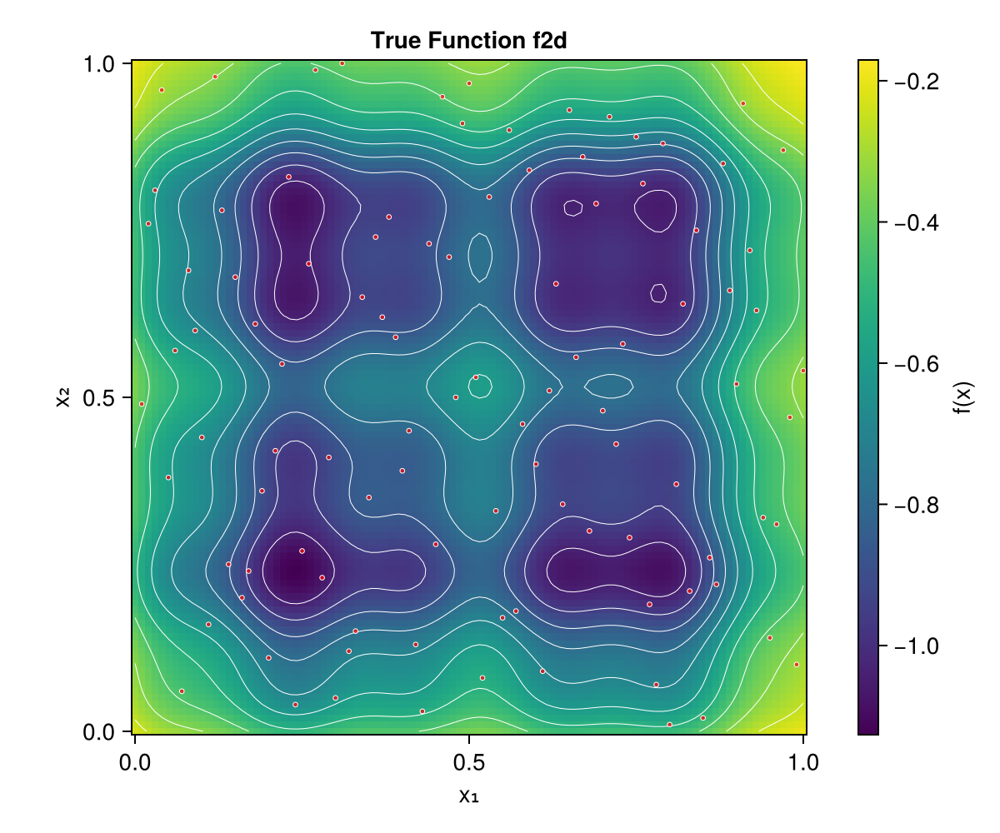

Local Approximate GP Demo
This example demonstrates the core laGP.jl workflow, adapted from the R laGP package demo.
Overview
We will:
- Build a full GP model on a 2D test function
- Make predictions with local approximate GP
- Compare different acquisition methods
Setup
using laGP
using Random
using LatinHypercubeSampling
using Statistics: mean
Random.seed!(42)Test Function
We use a modified Ackley-like function with interesting local structure:
function f2d(X::Matrix)
x = X[:, 1]
y = X[:, 2]
g(z) = exp.(-(z .- 1).^2) .+ exp.(-0.8 .* (z .+ 1).^2) .- 0.05 .* sin.(8 .* (z .+ 0.1))
return -g(x) .* g(y)
endThe function has two peaks and interesting local structure:

Generate Training Data
Create a Latin Hypercube design:
n_train = 100
plan, _ = LHCoptim(n_train, 2, 10)
X_train = Matrix{Float64}(plan ./ n_train)
# Scale to [-2, 2] for f2d
X_scaled = 4.0 .* (X_train .- 0.5)
Z_train = f2d(X_scaled)
println("Training data: $(n_train) points")
println("Response range: [$(minimum(Z_train)), $(maximum(Z_train))]")Create Test Grid
n_test_side = 100
x_test = range(0.0, 1.0, length=n_test_side)
X_test = Matrix{Float64}(undef, n_test_side^2, 2)
idx = 1
for j in 1:n_test_side
for i in 1:n_test_side
X_test[idx, 1] = x_test[i]
X_test[idx, 2] = x_test[j]
idx += 1
end
end
println("Test grid: $(n_test_side^2) points")Full GP Model
First, build a full GP for comparison:
# Estimate hyperparameters
d_range = darg(X_train)
g_range = garg(Z_train)
println("Lengthscale range: $(d_range.min) to $(d_range.max)")
println("Nugget range: $(g_range.min) to $(g_range.max)")
# Create and fit GP
gp = new_gp(X_train, Z_train, d_range.start, g_range.start)
jmle_gp(gp; drange=(d_range.min, d_range.max), grange=(g_range.min, g_range.max))
println("Optimized: d=$(gp.d), g=$(gp.g)")
println("Log-likelihood: $(llik_gp(gp))")
# Predict on test grid
pred_full = pred_gp(gp, X_test; lite=true)The full GP provides smooth predictions over the entire domain:

The variance surface shows uncertainty, which is lowest near training data:

Local Approximate GP
Now use aGP with different acquisition methods:
# ALC method (best accuracy)
result_alc = agp(X_train, Z_train, X_test;
start=6, endpt=50,
d=(start=gp.d, mle=false),
g=(start=gp.g, mle=false),
method=:alc
)
# NN method (fastest)
result_nn = agp(X_train, Z_train, X_test;
start=6, endpt=50,
d=(start=gp.d, mle=false),
g=(start=gp.g, mle=false),
method=:nn
)The aGP predictions are nearly indistinguishable from the full GP:

Compare Results
# True values for comparison
true_vals = f2d(4.0 .* (X_test .- 0.5))
# RMSE comparison
rmse_full = sqrt(mean((pred_full.mean .- true_vals).^2))
rmse_alc = sqrt(mean((result_alc.mean .- true_vals).^2))
rmse_nn = sqrt(mean((result_nn.mean .- true_vals).^2))
println("RMSE Comparison:")
println(" Full GP: $(round(rmse_full, digits=6))")
println(" aGP ALC: $(round(rmse_alc, digits=6))")
println(" aGP NN: $(round(rmse_nn, digits=6))")Side-by-side comparison of full GP vs local approximate GP predictions:

Local Design Visualization
Examine which points are selected for a specific prediction location:
# Single prediction at center
Xref = [0.5, 0.5]
lagp_result = lagp(Xref, 6, 30, X_train, Z_train;
d=gp.d, g=gp.g, method=:alc
)
println("Local design size: $(length(lagp_result.indices))")
println("Prediction: mean=$(lagp_result.mean), var=$(lagp_result.var)")The local design shows which training points were selected for predicting at the center:

The test function itself has interesting structure with constraints:

Key Observations
- Full GP vs Local: For smooth functions, full GP and aGP produce similar predictions
- ALC vs NN: ALC typically provides better accuracy by selecting informative points
- Computation: aGP scales better for large datasets (local designs are small)
- Hyperparameters: Using MLE-optimized parameters from a full GP subset works well
Next Steps
- Try different
startandendptvalues - Enable local MLE with
d=(start=..., mle=true) - Use
:mspemethod for a balance of speed and accuracy